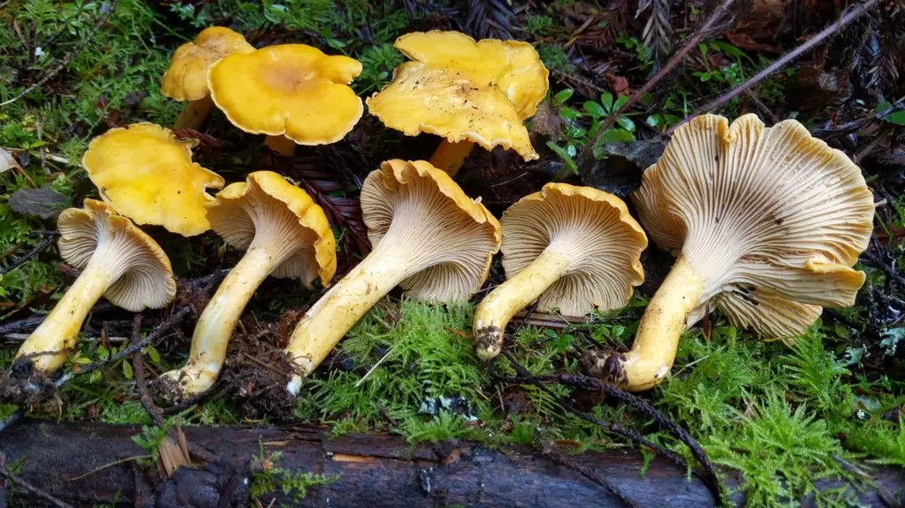
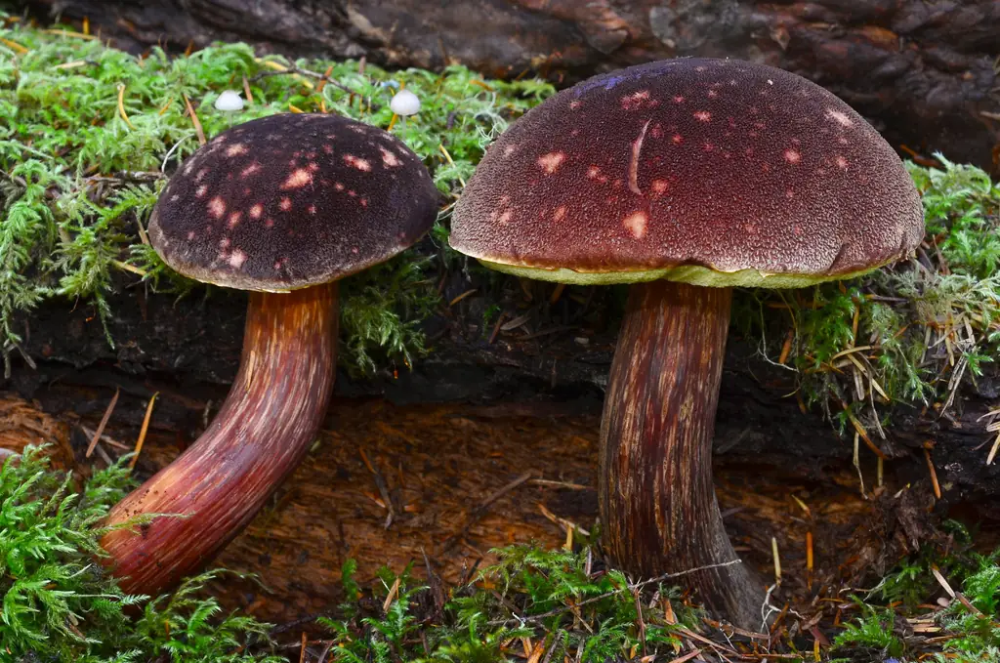
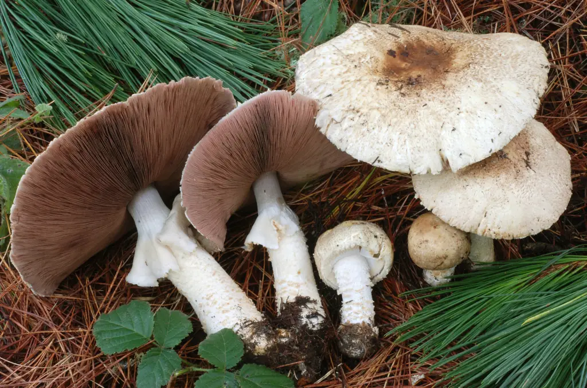
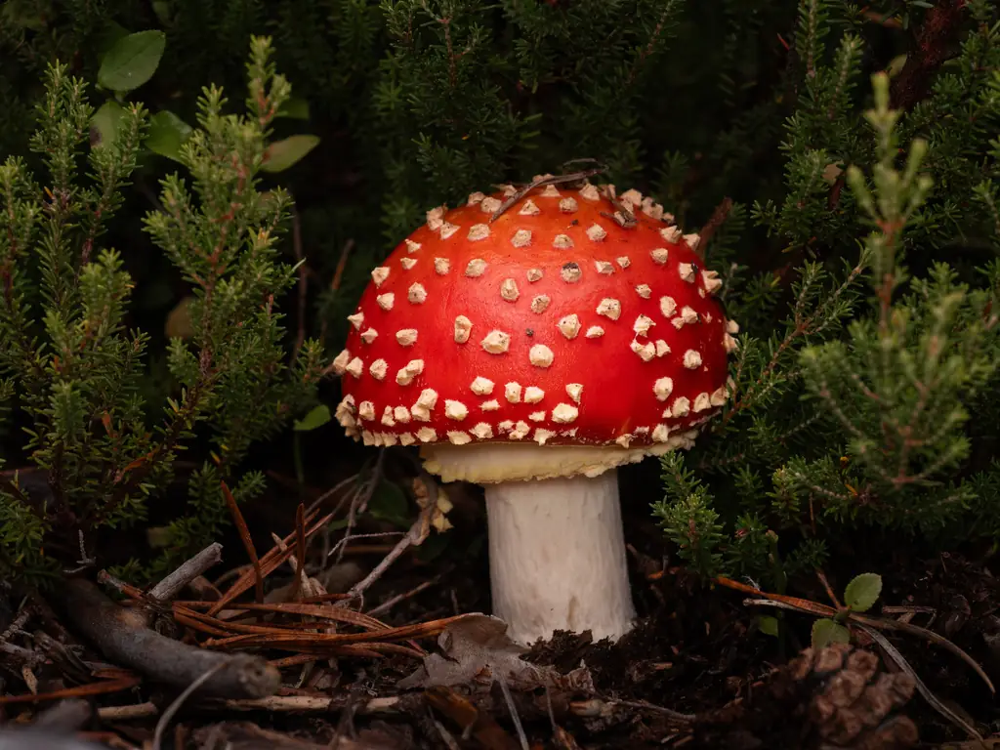
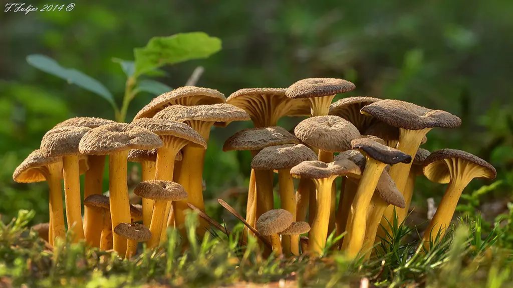
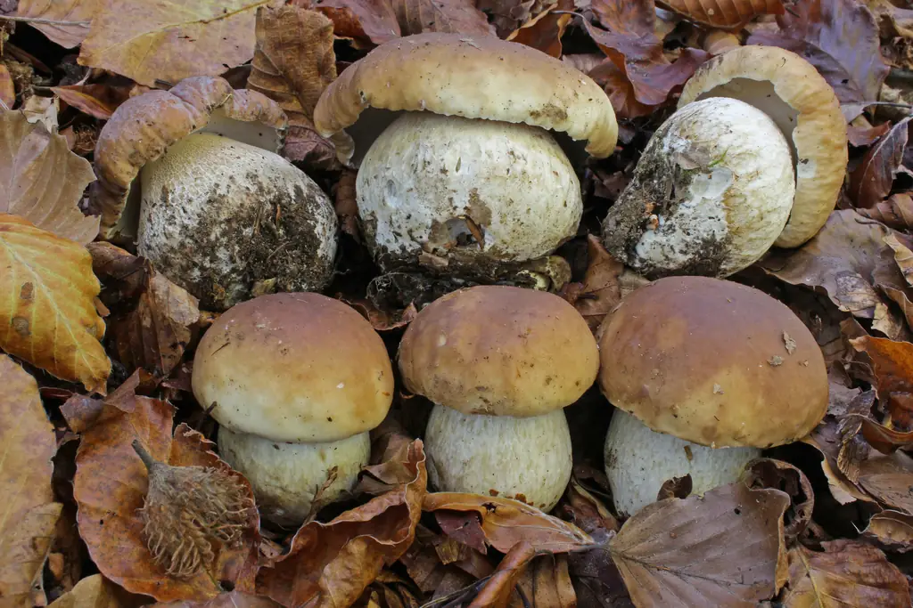

照片：Alan Rockefeller · CC BY · iNaturalist Identify拾菌记
拾自然之菌，记森林之迹。
MycoTrail · Pacific Northwest Mushroom Field Guide
认出来，不等于可以吃
本站帮你学习和缩小范围，不能确认任何一朵菌可以食用。烹饪、冷冻、干燥都不能让有毒的菌变安全。特征查找只列候选种；结果里没有毒菌，不代表手上的菌没毒。第一次吃一种菌，请有经验的人或当地菌会当面确认。有任何疑问，就不要吃。
先认识这几种致命毒菌
全部毒菌它们都有外形相像的可食种。采菌前先记住它们的样子。
最近看过
继续探索

照片：Christian Schwarz · CC BY-NC · iNaturalist Explore拾菌
探索 Pacific Northwest 的森林：这个月常见什么、各地的产季、出门前和林子里该知道的事。季节信息来自历年观察记录，不是实时出菇预测。
· 选择地区
这个月记录多的食用菌（与它自己全年最多的月份相比，据历年 iNaturalist 观察）。点开看易混毒菌。
季节变化
产季日历
每种菌在 BC、华盛顿、俄勒冈每个月被记录的多少，按高峰月份排列。点菌名看详情。
野外指南
守则、装备、时间、地点、采摘和做孢子印。
01四条守则
- 拿不准，绝对不吃。你必须确定它无毒。查看整朵菌，从盖顶到柄基，记下生境；成熟的菌盖还可以做孢子印。请真菌专家或可靠图鉴确认。
- 不在保护区采集，并先查许可。国家公园等地可能禁止采菌；美国国家森林常对松茸等单独管理，规则因林区而异。
- 尊重私人土地。进田野、林地、高尔夫球场前先征得主人同意。
- 举止得体。不践踏植物、不耙地面、不折枝；看好狗、放低声音。只取所需，给别人留一些。
02带什么
- 宽底轻篮子最好。塑料袋会挤坏菌子、让它们“出汗”。
- 采菌刀：折叠刀，一侧带锯齿可刮泥，尾端带小刷子。普通小刀也行。
- 长手杖：拨开落叶、标记位置、上下坡。
- 防水靴、雨衣、零食和水，还有地图和指南针，林中手机常没信号。迷路了怎么办，见下面的“迷路或受伤”。
迷路或受伤：停下来（S.T.O.P.）
- 出门前把去哪、走哪条路、几点回来告诉家人或朋友，过时没回就报警。带上头灯、保暖衣物、哨子；手机充满电，离线地图提前下好。
- 停（Stop）：一发现找不到路就停下，不要继续乱走，更不要为了找路钻进陌生地形。离原路越远，搜救范围越大。
- 想（Think）与看（Observe）：冷静回想来路，看看周围有什么危险；用手机或 GPS 看自己的位置。
- 计划（Plan）：有信号就打 911（有卫星求救功能的手机或卫星信使也能用）；原地等待，保暖、喝水、找避风处；用哨子或闪光求救，每组三声。
03什么时候找
- 季节只是参考，气候变化正在改变出菇时间。建议记一本采菌日志，可以用本站的采集记录。
- 春夏：连续几天透雨后转暖的温和天气最好；秋冬：温和潮湿的日子。久旱和暴雨都不利。
- 霜雪会让多数菌停止出菇，但管形鸡油菌、野生金针菇等耐寒。
- 早起：菌子没被动物和行人破坏，你也是第一个到场的人。
04去哪里找
我们采的只是真菌的“果实”。有的菌靠腐烂有机物生活，有的寄生在活树上，还有的与特定树种的根共生（菌根菌），所以可能长在离树一段距离的地方。附近出现其他（哪怕不能吃的）菌，往往是好兆头。
05采摘
- 先鉴定。检查整朵菌，记下生境、颜色、气味、大小、形状。同一种菌在不同生长阶段外观会变。
- 完整取下。轻轻拔、或用刀尖撬出，保留柄基便于鉴定。不要硬扯，以免伤到菌丝。
- 只要状态最好的。过熟、软烂、虫蛀多的留在原地散播孢子。
- 边采边清理。刷掉杂物、切掉脏柄基，不同种类分开放。
06做孢子印
- 用新鲜菌子。切下菌盖，菌褶朝下放在纸上；拿不准颜色深浅就一半白纸、一半黑纸。
- 在菌盖顶滴一滴水，用玻璃碗扣住。
- 放几小时或过夜，轻轻拿开碗和菌盖即可看到。
- 在自然光下看：白至奶油、粉至红、赭至黏土色、锈褐、紫褐、黑；大青褶伞是绿色。
同属内孢子颜色差别很小：鹅膏属白色，蘑菇属巧克力色，丝盖伞属、丝膜菌属和盔孢伞属褐色，粉褶菌属粉色。
离线使用
林子里常常没信号。装到手机桌面之后，没网也能打开整本手册；出门前把照片也下载好。
这台设备上存了什么
- 网络检查中…
- 文字资料检查中…全部物种、对比、急救、指南、食谱和你的记录
- 示例照片检查中…
- 3D 模型检查中…
- 外部链接iNaturalist 和资料来源网页需要联网；离线时这些链接后面会标“需联网”。
照片平时只在看到时才存下来。进山前在有网的地方点一下上面的按钮，没信号时所有照片也能看。照片只存在这台设备上；手机空间紧张时浏览器可能会清掉，出门前再看一眼这里。
户外模式
在林子里单手拿手机时用：字和按钮更大，颜色对比更强，关闭动画、3D 模型和装饰性的头图，首页只留搜索、识别和安全入口。更省电。
也可以随时点页面顶部的太阳图标切换。只在这台设备上记住。
装到手机桌面
- iPhone（Safari）：点底部的分享按钮，选“添加到主屏幕”。
- Android（Chrome）：点右上角菜单，选“安装应用”或“添加到主屏幕”。
- 装好后从桌面图标打开，会像独立的 App 一样全屏显示。
食用菌图鉴
64 种食用菌，按在西北太平洋的常见程度排列。图鉴帮你认识它们，不能替代当面鉴定。有任何疑问，就不要吃。

照片：Christian Schwarz · CC BY-NC · iNaturalist Identify by features特征识别
手上有一朵不认识的菌？一题一题回答看到的特征，列出外形相符的候选种。不知道就跳过。毒菌永远排在最前面。
认识一朵菌
拖动可以旋转；点部位名称或模型看说明。
认识特征与术语
鉴定一朵菌要看哪些地方，以及图鉴里常见的词是什么意思。
07看哪些特征
术语小词典

照片：Borja Fierro-Leva · CC BY · iNaturalist Toxic look-alikes毒菌与易混对比
西北太平洋采菌时最需要警惕的 22 种毒菌，最危险的排在前面；以及 9 组最常混淆的食用菌和毒菌对比。
易混对比
最常见的 9 组误采。每组并排比较，加粗的是最关键的区别。
几条可以带走的规律
- 可食的蘑菇属也是白色带环的菌：白色孢子印 + 基部有菌托就要高度警惕鹅膏。采白色有褶菌时一定挖出完整柄基。
- 羊肚菌是凹坑，鹿花菌是脑回状褶。
- 鸡油菌是钝圆的棱脊，不是刀片状的真菌褶；长在木头上、密集成簇的橙色菌要想到发光类脐菇。
- 墨水味，或柄基切开立即变铬黄：黄斑蘑菇。
- 大环柄菇类做孢子印：绿色就是有毒的大青褶伞。
- 长在木头上的小褐菇，孢子印锈褐色：可能是致命的纹缘盔孢伞。
- 【编者注】丝膜菌、史密斯鹅膏中毒症状可能数天后才出现。吃过野菌后身体不适，请尽早就医，并带上剩余菌样。
厨房指南
只适用于已经由有经验的人当面确认过身份的菌：下锅前检查、清理、切分、烹饪和保存，以及具体物种的处理要求。烹饪不能让有毒的菌变安全。
吃之前：逐条检查
每次下锅前都过一遍。全部打勾也不等于安全。
吃之前检查清单
厨房处理
采回家之后：整理、清洁、切分、烹饪和保存。做什么菜，见精选食谱。
先看这里
必须彻底煮熟：羊肚菌、鹅膏类（赭盖鹅膏、橙黄鹅膏），生吃有毒；紫丁香蘑、粉紫香蘑、疣柄牛肝菌、蜜环菌也须煮熟。
烹饪、煮沸、焯水、腌渍、冷冻、干燥，都不能让有毒的菌变安全。有毒的菌怎么做都有毒；身份没确认的菌，不要下锅。
【编者注】所有野生菌都建议彻底煮熟再吃。田野蘑菇、牛肝菌、松露在一些地方有生食的做法，但生吃更容易引起肠胃不适，本站不推荐。
几种菌混着做时，注意各自所需时间不同，确保全部熟透。
01回家第一件事
- 尽快把收获摊在桌布上，挑掉杂物，按种类分开。有疑问的扔掉，或再核对一次。
- 湿透的先晾干，否则会发霉。
- 最好的幼嫩个体留给沙拉、主菜、腌制或冷冻；次一些的做汤、炖菜或晒干。
- 暂不处理就放阴凉处，铺湿布、盖湿布，可放 1–2 天。
02清洁
- 不要水洗，吸水后会稀释风味。例外是绣球菌，可以洗。
- 大多数野菌不用去皮，例外是黏盖的褐环乳牛肝菌。
- 结实的（牛肝菌、香蘑）：小湿刀刮去柄基杂物，顺柄刮净。
- 娇嫩的（羊肚菌、鸡油菌）：软毛刷刷，嵌进去的泥用小刀挑出。
- 卷缘齿菌：老的菌刺发苦，轻搓即可脱落。
- 清理好后冷藏：有盖盒子，上下垫湿厨房纸。
03切分
一定要切开或掰开检查：虫从菌盖中心开始往外蛀，外表好看的里面可能全是虫孔。
- 牛肝菌、硫磺菌、大马勃：用刀切。大的盖柄分开，盖纵切片，柄切薄片。
- 羊肚菌：拧下柄，大的纵切，检查空腔里有无虫。
- 卷缘齿菌等脆的：用手掰成均匀小块。
- 鸡油菌等纤维质的：从盖往下撕开；硬柄留着熬高汤。
04基础做法：香芹蒜香
香芹蒜香野菌：意大利做牛肝菌的经典方法，也适合鸡油菌、卷缘齿菌等本站列为可食、已经当面确认过身份的种类。羊肚菌、鹅膏类等“须煮熟”的种类按各自页面的要求煮够时间。4 人份，约 35 分钟。
特级初榨橄榄油 120 ml · 蒜 3 瓣切碎 · 平叶欧芹 1 大把 · 已确认身份的可食菌 500 g 切厚片 · 盐、黑胡椒
- 小火加热油、蒜和一半欧芹。
- 转大火下菌，勤翻炒 5 分钟，再转小火。
- 调味，小火煮约 20 分钟至软；留一点汁、但不能太干。
- 撒上余下的欧芹。
05烹饪方法
06保存
干制最方便，可放很久；冷冻、腌制的宜在几个月内吃完。部分种类保存前先焯水，是为了保持颜色和形状，不是为了去毒：焯水、冷冻、干燥都不能让有毒的菌变安全。

照片：Filip Fuljer · CC BY-NC · iNaturalist Field log菌记
你自己的蘑菇探索档案：在哪里、什么时候、找到了什么，明年同一时间再去看看。
记录、照片和位置只保存在这台设备的浏览器里，不会上传，换手机或清除浏览器数据就会丢失，记得导出备份。记下来不等于鉴定过：有任何疑问，就不要吃。
新增一条记录
我的地图
年度探索报告
时间线
备份文件只在你自己的设备之间搬运时用“精确”。要分享给别人，请选“约 1 公里”或“不包含坐标”。

照片：Davide Puddu · CC BY · iNaturalist Recipes精选食谱
25 道家常做法，中式、日式、西式都有。用量为公制，1 汤匙 ≈ 15 ml；勾选材料可以当购物清单用。
中毒急救
怀疑吃了有毒的野菌：不要等症状，立刻打电话。症状出现得越晚，往往越危险。
1. 马上打电话
美国毒物控制中心（免费，24 小时，全国通用）1-800-222-1222 昏迷、抽搐、呼吸困难：直接打急救911 加拿大不列颠哥伦比亚省毒物中心（大温哥华地区：604-682-5050）1-800-567-8911如果按钮拨不出去，请手动拨打上面的号码。其他国家请拨当地急救电话。
- 不要等症状出现：即使现在没事也马上打，出现症状后治疗更难。
- 不要自己催吐，除非毒物中心让你这么做。
- 不要试网上的“解毒”偏方，按毒物中心和医生的指示做。
2. 保留证据
- 留下剩余的菌子和剩菜，包括切下的柄基和边角料；能拍照就多角度拍照。这能帮医生和鉴定人员确认是哪一种。
- 记下什么时候吃的、吃了多少、怎么做的，以及第一次出现不适的时间。
- 一起吃过的人都要联系医生，即使暂时没有症状。
3. 症状出现晚，不代表没事
有几类最危险的毒菌，吃下后要过好几个小时甚至几天才出现症状，那时器官可能已经受损。
| 毒菌 | 首发症状 | 之后 |
|---|---|---|
| 毒鹅膏、毁灭天使、纹缘盔孢伞（鹅膏毒素） | 约 6–10 小时后恶心、呕吐、腹泻 | 约 36 小时肝功能指标升高，约 72 小时可发生肝衰竭。毒素煮不坏 |
| 史密斯鹅膏 | 20 分钟到 1 天内腹痛、腹泻、呕吐 | 2–6 天后可发生肾衰竭，部分患者需要透析 |
| 细鳞丝膜菌等丝膜菌 | 可能数天后才出现 | 伤肾 |
| 大青褶伞、发光类脐菇 | 1–3 小时内剧烈呕吐腹泻 | 通常数天内恢复，但仍应就医 |
资料来源
- 美国卫生与公众服务部 HRSA：Poison Help 1-800-222-1222（全美通用）
- BC Drug and Poison Information Centre（BC 省毒物中心）
- California Poison Control System：Plants & Mushrooms（不要催吐、不要等症状、保留样本）
- The University of Kansas Health System Poison Control：Mushrooms（烹饪不能去毒、症状可能几天后才出现）
- UBC Mushrooms Up!：Galerina marginata（中毒时间线与毒物中心电话）
- UBC Mushrooms Up!：Amanita smithiana
- Wikipedia：Chlorophyllum molybdites